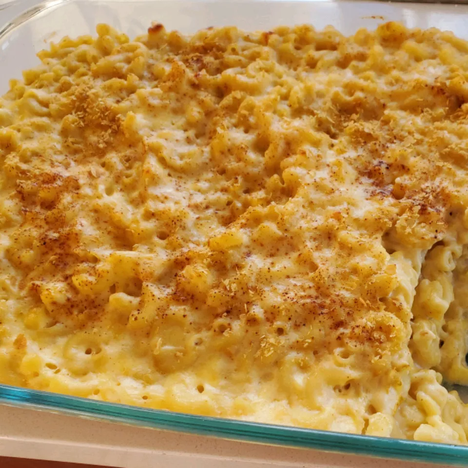

Mac n Cheese

Mac 'n cheese is a savoury comforting classic food
This homestyle mac 'n cheese is a very tasty and easy to make comfort food. It is very simple to make and absolutely delicious
Ingredients
- Macaroni
- Butter
- Flour
- Milk
- Cheese
- Seasonings
- Breadcrumbs
Directions
- Boil the Macaroni
- Melt butter, then whisk in flour and Milk
- Bring to a simmer then stir in cheese and season with salt and pepper
- Keep simmering until the sauce is thick, pour the sauce over macaroni and stir
- Melt 2 TBSP butter in a skillet, add Breadcrumbs and toast until they are brown
- Spread the topping over the mac 'n cheese and sprinkle on some paprika
- Bake in a preheated oven until golden brown